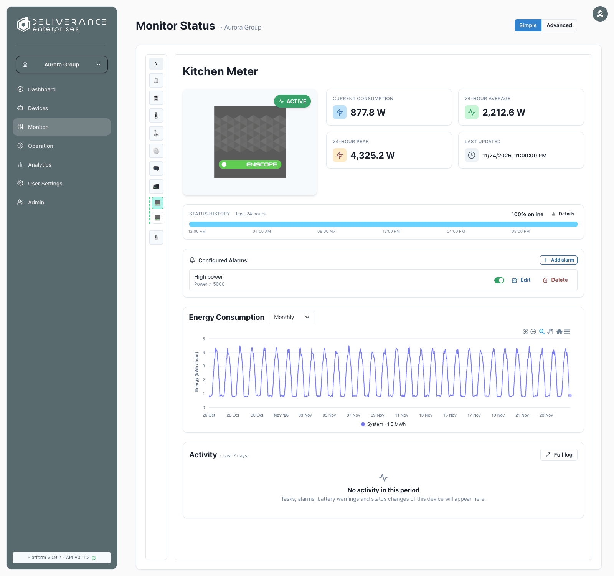
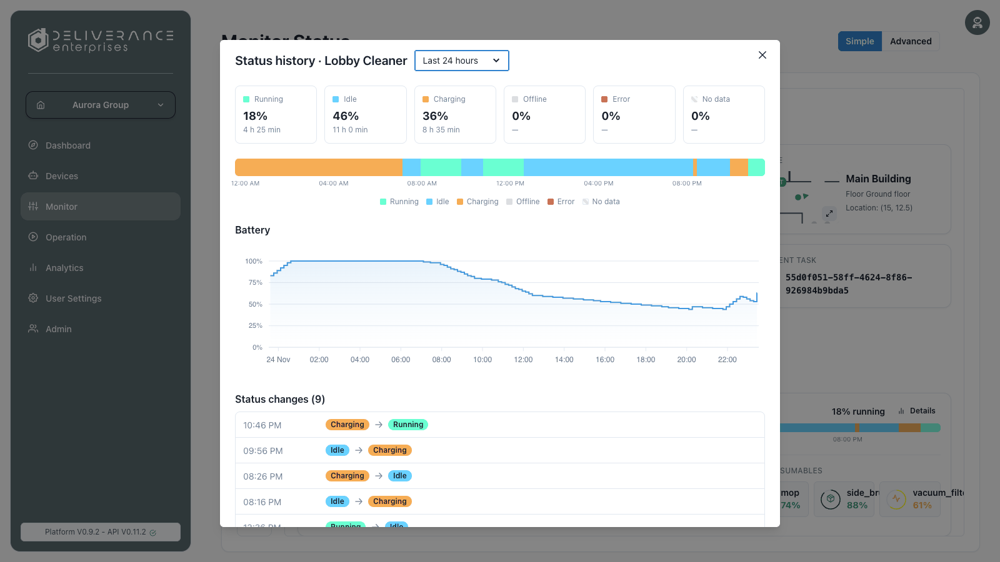
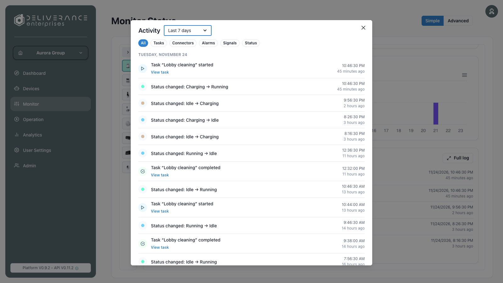

监控（Monitor）：设备运行¶
监控所选组织中已启用设备的运行数据。左侧面板列出设备，选择其中一台会显示其详情。在顶部可选择 简单（Simple）或 高级（Advanced）模式。

运行详情¶
内容 因设备类型而异。
配送机器人¶

状态、电量、场景、上次连接、当前任务、错误代码、维护健康度（Maintenance health，距下次维护的剩余量）、任务历史和动态。
清洁机器人¶

另外显示水位（清水和污水）和耗材（拖布、滤网、刷子等），每项均带百分比。
传感器¶

测量的指标、最近一次读数的日期以及各指标的图表：温度（Temperature）、湿度（Humidity）、光照（Light）、移动（Motion），带时段选择器。仅测温度的传感器只显示该图表。
电表¶

当前能耗、最近 24 小时的平均值和峰值，以及 能耗（Energy Consumption）图表。集线器显示其电表；点击其中一个即可打开。
摄像头¶

最近一次告警、上次连接和 实时画面（Live Image）：每隔几秒刷新一次的静态图像，不是视频。如果最近一张图像超过 30 秒，会显示 非实时（Not live）。如果摄像头断开连接或未发送图像，会有消息提示。
机器人的场景与地图¶

场景（Scene）卡片在地图上显示机器人，并注明建筑和楼层；放大按钮可打开完整地图。标签表示位置的可靠程度：
| 标签 | 含义 |
|---|---|
| 精确（Exact） | 比例由制造商提供。 |
| 已标定（Calibrated） | 由用户标定；会注明误差。 |
| 估算（Estimated） | 根据地图上的已知点计算。 |
| 粗略（Rough） | 近似位置。 |
| 未标定（Not calibrated） | 显示地图，但不显示机器人的位置。 |
状态历史¶

状态历史（Status history）条带汇总最近 24 小时的状态。详情（Details，或设备的状态标签）打开 24 小时、7 天或 30 天的历史，包括处于各状态的时间、电量和状态变化。
动态¶

动态（Activity）显示设备最近发生的事情。完整日志（Full log）打开带筛选的日志：任务（Tasks）、连接器（Connectors）、告警（Alarms）、信号（Signals）和 状态（Status）。查看任务（View task）打开对应的任务。
告警¶
传感器和电表有一个 已配置告警（Configured Alarms）区块，每个告警都可以在其中启用、编辑或删除。添加告警（Add alarm）用于创建告警：

- 名称（Name）：描述性名称（可选）。
- 指标（Magnitude）：监视的数据。
- 运算符（Operator）和 阈值（Threshold value）：触发告警的条件。存在（Present）和 不存在（Absent）不使用阈值。
- 开始日期（Start date）和 结束日期（End date，可选）：有效期。
- 启用（Enabled）：可在不删除告警的情况下将其停用。
告警触发后，会记录在动态中，并通过电子邮件通知组织中已启用 告警通知（Alarm Notifications）的用户。
机器人的任务¶

详细任务列表（Detailed Task List）列出任务的日期、类型、状态和名称。下载（Download）可打印报告或将其保存为 PDF。点击任务会展开其报告，内容取决于机器人：

高级模式¶

高级 在一张图表中比较多个电表和传感器的读数：选择区间、分辨率、指标（字段，Fields）和设备，然后点击 生成（Generate）。拆分电表相位（Split meter phases）将 L1、L2 和 L3 分开显示。